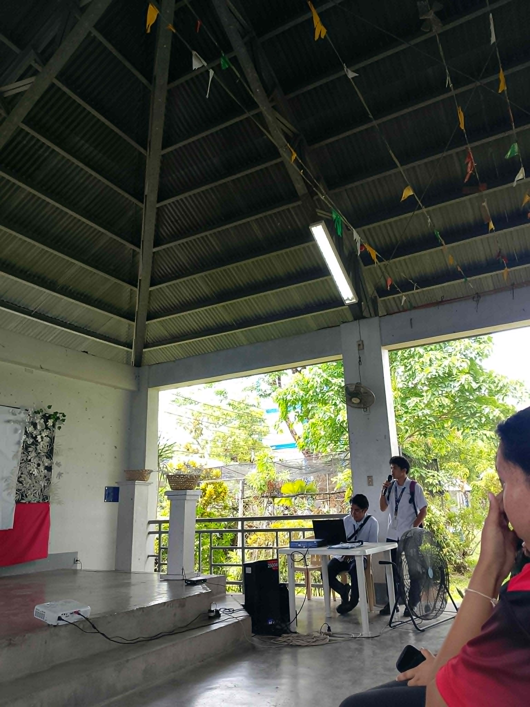
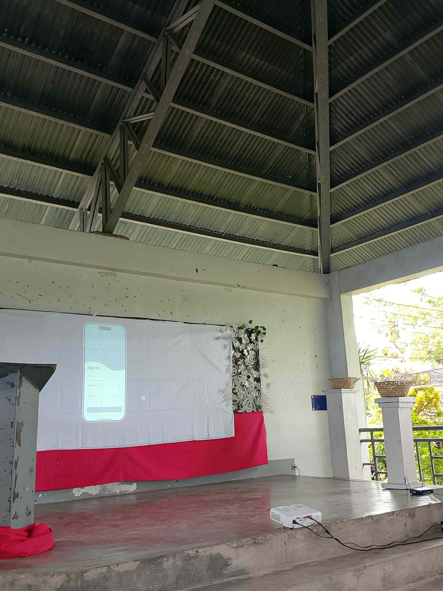
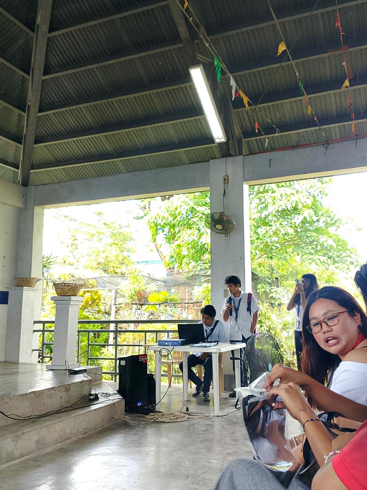
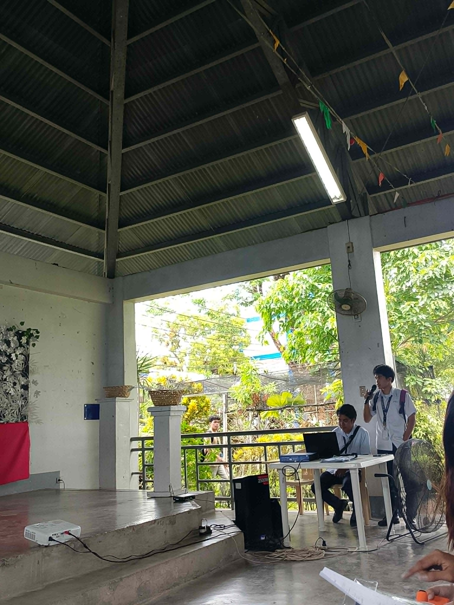

Project Prototype
Student Study Planner & Deadline Tracker Mobile Application
Consent Form
Participants must sign informed consent before testing begins.
Respondents Information
Spreadsheet containing the demographic profile and responses of selected participants used in the study.
Participant Responses Spreadsheet
The spreadsheet includes the respondents’ demographic information, usability testing answers, experience with similar systems, and technology usage data gathered during the evaluation process.
Survey Instruments
The following instruments were used during the usability evaluation and heuristic assessment of the proposed system.
Heuristic Evaluation Workbook
Each group member conducted an individual heuristic evaluation based on Jakob Nielsen’s 10 Usability Heuristics to identify usability problems and provide design recommendations.
Usability Testing Survey
A usability testing questionnaire was distributed to gather feedback regarding the effectiveness, efficiency, satisfaction, and overall user experience of the system prototype.
- System Usability Scale (SUS)
- User Feedback Questionnaire
- Task Completion Observation
- Demographic and Technology Usage Profile
Documentation
Photos during usability testing and system presentation.



